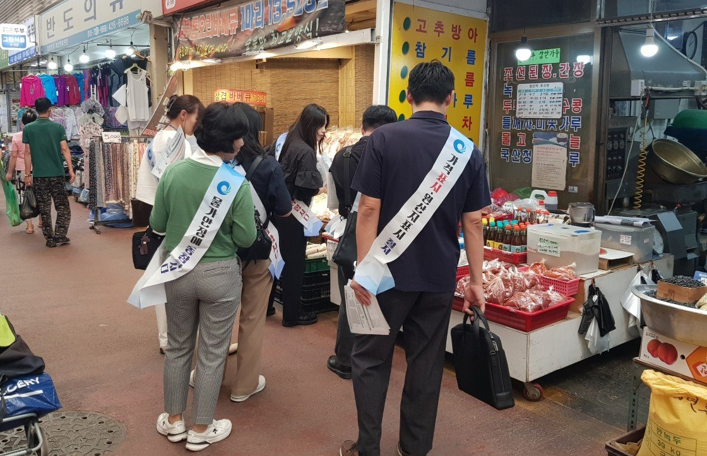
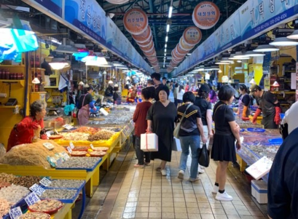

인천 10월 소비자물가 2.7% 올라…외식 뺀 개인서비스는 4.0%로 수도권 최고
국내 2.8%보다 낮지만 한 달 새 0.1%포인트 올라
신선식품 6.2% 내릴 때 외식·가공식품은 2.9% 올라
정부, 김장재료 최대 50% 할인…가을배추 생산 18.5% 늘어
AI경제저널=김갑봉 기자 | 국가데이터처는 인천의 10월 소비자물가가 1년 전보다 2.7% 올랐다고 3일 밝혔다. 「2026년 10월 소비자물가동향」의 시도별 집계다.
인천 소비자물가지수는 120.89(2020년=100)로 전월보다 0.2% 올랐다. 국내 상승률 2.8%보다 0.1%포인트 낮다.
국내 내릴 때 인천은 올라
인천은 9월에 2.6%로 대구와 함께 17개 시도 가운데 상승률이 가장 낮았다. 10월에는 2.7%로 0.1%포인트 올랐다. 같은 달 국내 상승률은 2.9%에서 2.8%로 0.1%포인트 내렸다.
수도권에서는 서울이 2.5%, 경기가 2.9% 올랐다. 시도별 상승률은 충북과 경남이 3.2%로 가장 높고, 서울과 대구가 2.5%로 가장 낮았다.
외식 뺀 개인서비스 4.0%
인천의 외식을 뺀 개인서비스 물가는 1년 전보다 4.0% 올랐다. 서울 3.5%, 경기 3.4%보다 높고 국내 3.6%도 웃돈다. 수도권 세 시도 가운데 가장 높다.
인천 개인서비스 전체는 3.4% 올랐다. 외식은 2.7%로 국내 2.9%보다 낮았고, 공공서비스는 1.4%로 국내 1.7%보다 낮았다.
국내에서 외식을 뺀 개인서비스는 보험서비스료(13.4%)와 해외단체여행비(11.5%), 공동주택관리비(3.1%)가 끌어올렸다. 이 갈래가 10월 전체 물가 상승률 2.8%에 보탠 몫(기여도)은 0.73%포인트로 품목 묶음 가운데 가장 크다.

재료값 내리고 차림값 올라
국내 신선식품지수는 1년 전보다 6.2% 내렸다. 상추가 44.3%, 오이가 39.5%, 호박이 38.4%, 배추가 11.8% 떨어졌다. 농축수산물 전체는 1.7% 내렸다.

같은 달 외식과 가공식품은 각각 2.9% 올랐다. 빵이 5.9%, 즉석식품이 12.4% 올랐다. 외식 상승률과 농축수산물 상승률의 차이는 4.6%포인트다(연구소 계산).
석유류는 14.9% 올랐다. 경유가 19.7%, 휘발유가 11.6% 뛰었다. 석유류가 10월 물가 상승률에 보탠 몫은 0.56%포인트다.
권대영 재정경제부 제1차관은 같은 날 물가관계차관회의를 열고 석유 최고가격제가 10월 물가상승률을 약 0.8%포인트 낮춘 것으로 추정한다고 밝혔다. 정부는 휘발유값이 리터당 1850원대, 경유값이 1840원대를 유지하고 있다고 설명했다.
권 차관은 "누적된 물가 상승의 여파로 체감물가는 여전히 높고 물가 상방압력과 리스크도 남아 있는 만큼, 경각심을 가지고 물가 관리에 모든 역량을 집중하겠다"고 말했다. 정부는 농축수산물 가격이 3개월 연속 1년 전보다 내렸다고 밝혔다.
식료품과 에너지를 뺀 근원물가는 전월보다 0.4%, 1년 전보다 2.8% 올랐다. 1~10월 누계 상승률은 2.7%다.
김장재료 최대 50% 할인
농림축산식품부와 해양수산부는 같은 날 「2026 김장재료 수급안정대책」을 발표했다. 한국농촌경제연구원은 올해 가을배추 생산량을 121만4000톤, 가을무를 37만2000톤으로 내다봤다. 1년 전보다 각각 18.5%, 11.1% 많다.
정부는 11월 9일부터 12월 6일까지 대책을 시행한다. 농수산물 할인에 640억원을 들여 최대 50%까지 값을 깎아 준다. 농산물은 440억원으로 대형·중소형마트에서 김장재료 전 품목과 수육용 돼지고기 등을 최대 40% 할인한다(10월 29일~12월 2일).
전통시장 등에서 쓰는 농할상품권은 200억원어치를 20% 할인해 판다. 고령층은 11월 2일부터 8일까지, 전체 국민은 11월 9일부터 15일까지 살 수 있다. 한도는 10만원이다.
수산물은 「대한민국 수산대전_김장 특별전」(10월 28일~11월 29일)에 200억원을 들여 천일염과 새우젓, 멸치액젓, 굴 등을 최대 50% 할인한다.

국가데이터처는 2025년을 기준으로 바꾼 소비자물가지수를 오는 12월 공표할 예정이다. 이에 따라 2020년 기준으로 공표한 수치는 바뀔 수 있다.
참고문헌
- "2026년 10월 소비자물가동향", 국가데이터처, 2026.11.3., https://mods.go.kr/board.es?mid=a10301010000&bid=213&act=view&list_no=447801
- "2026년 9월 소비자물가동향", 국가데이터처, 2026.10.2., https://mods.go.kr/board.es?mid=a10301010000&bid=213&list_no=447322&act=view
- "10월 소비자물가는 2.8% 기록, 김장재료 수급안정 위해 역대 최대규모 김장대책(640억원) 시행, 동절기 농축수산물 수급 안정 총력(11월 물가관계차관회의)", 재정경제부 등 관계부처 합동, 2026.11.3., https://www.korea.kr/briefing/pressReleaseView.do?newsId=156787669
- "가을배추·무 풍작, 올해 김장은 부담 없이 '한 포기 더' 담그세요!(2026 김장재료 수급안정대책)", 농림축산식품부·해양수산부, 2026.11.3., https://www.korea.kr/briefing/pressReleaseView.do?newsId=156787658
[사진 출처]
- [사진1] 인천광역시 보도자료 「인천시, 추석 명절 물가 안정 총력 ‘가격표시제 실태’ 민·관 합동점검 실시」 사진, 공공누리 제1유형, 2026.9.16., https://www.incheon.go.kr/IC010205/view?repSeq=DOM_0000000015545048
- [사진2] 인천광역시 보도자료 「인천시, 김장철 맞이 온누리상품권 환급행사 개최 … 전통시장 활력 불어넣는다」 사진, 공공누리 제1유형, 2025.11.17., https://www.incheon.go.kr/IC010205/view?repSeq=DOM_0000000013536261
관련기사
- 인천시, 천원택배 운영·배송체계 일원화…무인 집화·간편결제 도입
- 박인서 인천항만공사 사장 취임…"미해결 현안 푸는 해결사 되겠다"
- 누적 수출 9000억 달러 첫 돌파…인천 비중은 5.1%로 낮아져
- 인천신용보증재단, 소상공인 495억원 협약보증 2일부터 접수
저작권자 © AI경제저널 무단전재 및 재배포, AI학습 및 활용 금지